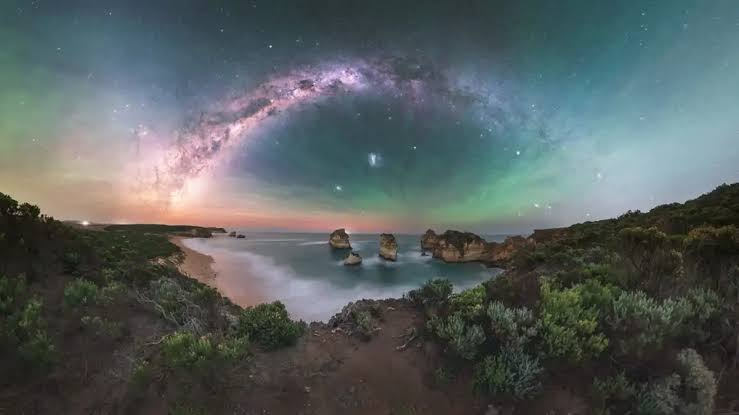

.jpg)
Bienvenido a UniDatos, la unica pagina web que conecta datos diferentes, inutiles o irrelevantes en informacion de agrado a la curiosidad del autodidacta y polimata

1. La Física del Límite: Cromatismo Atmosférico
Donde el ojo común solo ve color, el espectador autodidacta descubre la mecánica de fluidos y la óptica cuántica. La fotografía del Valle de Yosemite captura la dispersión de Rayleigh en su punto más sutil; las partículas suspendidas en la neblina filtran las longitudes de onda cortas, tiñendo el aire de un azul denso, mientras el centro del valle se enciende con el espectro cálido del sol naciente.
Por su parte, la obra maestra de Brent Martin en Diamond Beach eleva este juego a la termósfera. El "cielo esmeralda" no es un truco digital, sino quimiluminiscencia atmosférica (airglow): átomos de oxígeno excitados por la radiación solar durante el día que liberan su energía por la noche en forma de fotones verdes, entrelazados con los tonos rosados de una aurora austral impulsada por el viento solar. Ambas imágenes son crónicas visuales de cómo nuestra atmósfera procesa la energía de la estrella que nos rige.
2. Geometría Sagrada: El Flujo y la Piedra
En términos de composición y sistemas dinámicos, ambas capturas operan bajo una estructura de contrastes elementales idéntica:
• El Ancla Cratónica: El granito del relieve alpino (Yosemite) frente al basalto de los acantilados oceánicos (Australia). Ambas son formaciones ígneas y metamórficas que imponen límites físicos al paisaje.
• El Espejo Dinámico: El río Merced absorbe y difumina la luz diurna en un flujo laminar; el agua que empapa la arena de Diamond Beach actúa como un espejo reflectante cuántico para la Vía Láctea. El agua, en ambos casos, sirve como el elemento unificador que conecta el suelo con el firmamento.
3. La Psicología de la Persistencia
Hay una convergencia epistemológica en el origen de ambas imágenes. El paisaje perfecto no se encuentra, se calcula. Así como el fotógrafo de Yosemite debe prever la densidad de la niebla matutina y el ángulo exacto de la refracción solar, la historia detrás de Diamond Beach Emerald Sky es una lección de resiliencia y adaptabilidad: un fotógrafo varado en la arena, luchando contra mareas cambiantes y la aleatoriedad de las tormentas geomagnéticas para capturar un instante donde el cometa C/2024 G3 Atlas se alineaba con el cosmos.